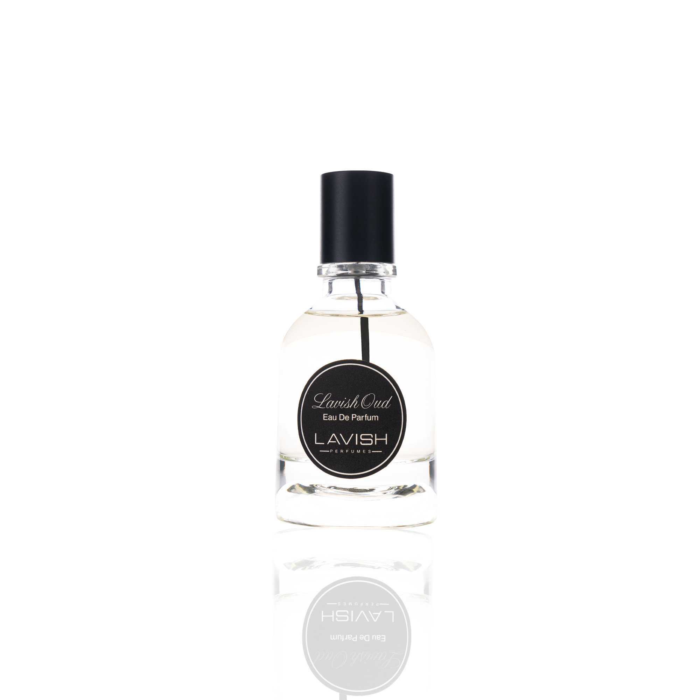

Shot 1 · 0.00s – 3.20s
Some stories begin with oud.
Use a dark warm-brown-to-ivory purely graphical gradient, with approved LAVISH OUD original image in an intact central inset. No timber-origin photo, heritage architecture or cultural-symbol props. English creative version with restrained editorial typography.
Shot 2 · 3.20s – 7.00s
Spice. A floral impression.
Two halves of a typeset field transition softly between warm spice-toned graphic texture and restrained floral-toned color. The approved LAVISH OUD bottle remains in its unmodified original photo inset. English creative version with restrained editorial typography.
Shot 3 · 7.00s – 11.20s
Let the scent lead.
Set LAVISH OUD original image as full product hero against an ivory matte. Use a slow 2D scale on the containing frame, not bottle warping; keep label legible. English creative version with restrained editorial typography.
Shot 4 · 11.20s – 15.00s
LAVISH OUD · Explore the fragrance.
Show LAVISH OUD original bottle image and the intact gold-square Lavish Logo in separate balanced positions. Hold the CTA with generous size; no new product claim or origin badge. English creative version with restrained editorial typography.